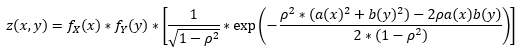

Click the Graph Settings button to open an overlay window for controlling the distribution parameters.
You can control the bivariate normal distribution in 3D by clicking and dragging on the graph, zooling in and out, as well as taking a picture
Probability Results are reported in the Probability section
This graphical bivariate Normal probability calculator shows visually the correspondence between the graphical area representation and the numeric (PDF/CDF) results. However, the reported probabilities are approximate (accuracy 10-3 for Results section and the 2D graph, 10-2 for 3D bivariate plot) due to the finite viewing window of the infinitely supported Normal distribution, and the limited numerical precision of the inputs (domain) and outputs (range). Users that require high-precision calculations are encouraged to use the SOCR high-precision numerical probability calculators
The Joint Bivariate Distribution is formed by using the Farlie–Gumbel–Morgenstern copula that combines the X and Y distributions. The steps taken by the calculator are outlined below:
All continuous distribution are discretized, turning into discrete arrays with 250 points
κ is calculated from the values of ρ and the standard deviations of both distributions using the following formula:
Using the value for κ, the Joint Bivariate PDF is calculated using the following formula: 
Finally, the Joint Bivariate CDF is calculated using the following formula:
Calculator Rules
While this calculator allows discrete and continuous probabilities to be used together simultaneously, using discrete functions may produce minor visual errors. They will not impact the overall calculations, but an occasional red streak or slight discrepancy between the red area and the blue line can be visible on the 2D graph
The calculator has certain limitations on the variables and min/max values, so if those limitats are exceeded then calculator will restore the incorrect values to default
Each distribution's limits are described under the Rules section in the Graph Settings tab
The calculator supports up to 4 different variables for both X and Y. Some of those variables are not used for every distribution, so an "N/A" will appear instead of an entry field. For example, the normal distribution only needs 2 variables to be entered, so the other two will be N/A for entry
Instructions
Use the Distribution type section to select what distributions you would like to be displayed
Use the Variable Settings section to input the distribution parameters and correlation coefficient
Use the Control section to input appropriate bivariate limits for X and Y variables
Use the Graph Settings sections to indicate what type of Marginal Distribution and Joint Bivariate Distribution to view. You can select to view either the Marginal functions of each variable, the Conditional distributions at the limits of variables, or the CDF functions for the Marginal Distribution graph, while the PDF and the CDF are available for the Joint Bivariate Distribution plot.
Once done, click the X button to close the Graph Settings Section. The graph may take a few seconds to update.
Rules
Normal Distribution: mean can take any value, but the standard deviation must be greater than 0
Poisson Distribution limits: the value of lambda must be a non-negative number. Also, the X or Y limits must also be non-negative
Gamma Distribution: both the shape (k) and the scale (θ) values must be greater than 0. Also, the X or Y limits must also be non-negative
Chi-Square Distribution: the number of degrees of freedom must be a natural number. Also, the X or Y limits must also be non-negative
Student's t-distribution: the number of degrees of freedom must be a positive number
F-distribution: the values for the degrees of freedom D1 and D2 must be positive integers. Also, the X or Y limits must also be non-negative
Beta Distribution: the values for α and β must be positive numbers. Also, the limits must be within the 0 to 1 range
Weibull Distribution: the values for the shape (k) and scale (λ) must be greater than 0. Also, the X or Y limits must also be non-negative
Pareto distribution: the values for the shape (α) and scale (Xm or Ym) must be greater than 0. Also, the X or Y limits must also be non-negative
Logistic distribution: while the value for the location (μ) may be any real number, the value for s must be greater than 0
Log-normal distribution: μ must be a non-negative value and σ must be breater than 0. Also, the X or Y limits must also be non-negative
Gumbel distribution: while the value for the location (μ) may be any real number, the value for scale (β) must be greater than 0
Uniform distribution: while the values for both a and b can be any real number, b must be greater than a. Also, the limits for X or Y must be no less than a-2 and no greater than b+2
Birthday distribution: the value for days and sample must be a positive integer. Also, The limits for X or Y must be non-negative
U-Quadratic distribution: while the values for a and b can be any real number, b must be greater than a
Arcsine distribution: the X or Y limits must be between 0 and 1
Semicircle distribution: the value for the radius (R) must be greater than 0
Max Distance Walked distribution: the value for N must be a positive integer. Also, the X or Y limits must be non-negative
Final Position on a Walk distribution: the value for N must be a positive integer. Also, the X or Y limits must be non-negative
Cauchy distribution
Hyperbolic Secant distribution: while the value for the location may be any real number, the value for scale must be greater than 0
Irwin-Hall distribution: the value for N must be a positive integer. Also, the X or Y limits must be non-negative
Laplace distribution: while the value for the location (μ) may be any real number, the value for scale (b) must be greater than 0
Benford-Mantissa distribution: the value for b must be greater than 2. Also, the X or Y limits must be non-negative
Exponential-Logarithmic distribution: the value for p must be greater than 0 but less than 1, while the value for β must be greater than 0. Also, the X or Y limits must be non-negative
Beta Prime distribution: the values for α and β must be positive numbers. Also, the X or Y limits must be non-negative
Zeta distribution: the value for s must be an integer greater than 1. Also, the X or Y limits must be non-negative
Log Logistic distribution: the values for α and β must be positive numbers. Also, the X or Y limits must be non-negative
Maxwell–Boltzmann distribution: the value for a must be greater than 0. Also, the X or Y limits must be non-negative
Logarithmic distribution: the value for p must be greater than 0 but less than 1. Also, the X or Y limits must be non-negative
Binomial distribution: the value for Prob must be greater than 0 but less than 1, while the value for N must be a positive integer. Also, the X or Y limits must be non-negative
Negative Binomial distribution: the value for Prob must be greater than 0 but less than 1, while the value for K must be a positive integer. Also, the X or Y limits must be non-negative
Hypergeometric distribution: the value for N (population size) must be a positive integer, while the values for k and n must be positive integers no greater than N. Also, the X or Y limits must be non-negative
Polya: the value for N (population size) must be a positive integer, while the values for r and g must be positive integers no greater than N. Also, the X or Y limits must be non-negative
Finite Order distribution: the value for m (population size) must be a positive integer, the value for n must be a positive integer no greater than m, and the value for k must be a positive integer no greater than m. Also, the X or Y limits must be non-negative
Matching Hats distribution: the value for the number of hats must be a positive integer. Also, the X or Y limits must be non-negative
Triangular distribution: while all of the parameters can be any real number, Right must be greater than Left, while Middle must be in between Left and Right.
Coupon Collector distribution: both m and k must be positive integers, but k must be no greater than m. Also, the X or Y limits must be non-negative
Benford's Digit distribution: the value for b must be greater than 1. Also, the X or Y limits must be non-negative
Beta Binomial distribution: the value for n must be a positive integer, while a and b must be positive real numbers. Also, the X or Y limits must be non-negative
Beta Negative Binomial distribution: the value for k must be a positive integer, the value for a must be greater than 2 whileb must be positive real numbers. Also, the X or Y limits must be non-negative